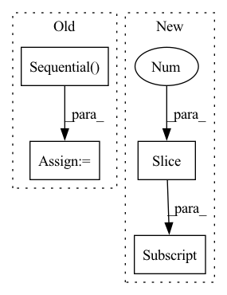

Pattern ID :29350
Before Change
def __init__(self, n_in, n_out, n_h):
super().__init__()
self.net = nn.Sequential(
nn.Linear(n_in, n_h),
nn.LeakyReLU(0.2),
nn.Linear(n_h, n_h),
nn.LeakyReLU(0.2),
nn.Linear(n_h, n_h),
nn.LeakyReLU(0.2),
nn.Linear(n_h, n_out),
)
def forward(self, x):
return self.net(x)
After Change
for s1, s2 in zip(layer_sizes, layer_sizes[1:]):
layers.append(nn.Linear(s1, s2))
layers.append(nn.LeakyReLU(leaky_a))
super().__init__(*layers[:-1] ) // drop last ReLU
In pattern: SUPERPATTERN
Frequency: 3
Non-data size: 4
Instances Fragment ID: 86174884
Project Name: janosh/torch-mnf
Commit Name: 0664a2ea516f30dda5d538a8a683b08e62e71948
Time: 2020-11-11
Author: janosh.riebesell@gmail.com
File Name: torch_mnf/models/mlp.py
M Class Name: MLP
N Class Name: MLP
M Method Name: __init__(1)
N Method Name: __init__(4)
M Parent Class: nn.Sequential
N Parent Class: nn.Module
M File Name: torch_mnf/models/mlp.py
N File Name: torch_mnf/models/mlp.py
M Start Line: 7
M End Line: 17
N Start Line: 8
N End Line: 12
Before Change
nn.Conv2d(3, 64, kernel_size=(3, 3), stride=(1, 1), padding=(1, 1)),
*self.model.features[1:]
)
self.model.classifier = nn.Sequential(
nn.Linear(4608, 4096, bias=True),
nn.ReLU(inplace=True),
nn.Dropout(),
nn.Linear(4096, 4096, bias=True),
nn.ReLU(inplace=True),
nn.Dropout(),
nn.Linear(4096, self.config.num_classes, bias=True),
)
self.model.apply(weights_init_kaiming)
self.model.apply(fc_init_weights)
After Change
if self.config.pretrained:
self.model = models.vgg16(self.config.pretrained, False)
self.model.classifier = self.model.classifier[:-1] // remove final layer
self.model.classifier.add_module(
"6", nn.Linear(4096, self.config.num_classes, bias=True)
) Fragment ID: 86174890
Project Name: biasvariancelabs/aitlas
Commit Name: 3c4c781681550868173efe6230071ba63a1b65d2
Time: 2020-12-30
Author: ivan.kitanovski@gmail.com
File Name: aitlas/models/vgg16.py
M Class Name: VGG16MultiLabel
N Class Name: VGG16MultiLabel
M Method Name: __init__(2)
N Method Name: __init__(2)
M Parent Class: BaseMultilabelClassifier
N Parent Class: BaseMultilabelClassifier
M File Name: aitlas/models/vgg16.py
N File Name: aitlas/models/vgg16.py
M Start Line: 26
M End Line: 47
N Start Line: 25
N End Line: 40
Before Change
for h0, h1 in zip(hs, hs[1:]):
layers.extend([MaskedLinear(h0, h1), nn.ReLU()])
layers.pop() // pop the last ReLU to get a linear output layer
self.net = nn.Sequential( *layers)
// seeds for orders/connectivities of the model ensemble
self.natural_ordering = natural_ordering
self.num_masks = num_masksAfter Change
hs = [n_in] + hidden_sizes + [n_out]
for h0, h1 in zip(hs, hs[1:]):
layers.extend([MaskedLinear(h0, h1), nn.ReLU()])
super().__init__(*layers[:-1] ) // drop last ReLU)
// seeds for orders/connectivities of the model ensemble
self.natural_ordering = natural_ordering Fragment ID: 86174891
Project Name: janosh/torch-mnf
Commit Name: aacb35a8bb106738d68054af51ab57389f37c660
Time: 2020-08-23
Author: janosh.riebesell@gmail.com
File Name: torch_mnf/layers/made.py
M Class Name: MADE
N Class Name: MADE
M Method Name: __init__(6)
N Method Name: __init__(6)
M Parent Class: nn.Sequential
N Parent Class: nn.Module
M File Name: torch_mnf/layers/made.py
N File Name: torch_mnf/layers/made.py
M Start Line: 40
M End Line: 51
N Start Line: 45
N End Line: 49